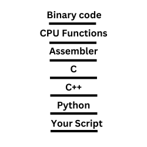

Abstraction is to take a longform version of a code implementation and condense it to a lesser representation.
It does not matter which language we are writing in, from assembler to Python, there is abstraction.
When we write code and abstract it, we typically create layers.
All power in programming derives from this concept. Take this code, for example:
public class Main {
public static void main(String[] args) {
try {
// This code will throw an exception.
int[] numbers = new int[5];
numbers[5] = 10;
} catch (Exception e) {
e.printStackTrace();
}
}
}Here we create a numbers array with indices 0-4. We then call the 5th index, which is out of bounds.
When we look into the stack we get this:
java.lang.ArrayIndexOutOfBoundsException: Index 5 out of bounds for length 5
at com.example.Main.main(Main.java:12)
at java.lang.reflect.Method.invoke(Native Method)
at java.lang.reflect.Method.invoke(Method.java:498)
at java.lang.ClassLoader.invokeMethod(ClassLoader.java:961)
at java.lang.ClassLoader.invokeMethod(ClassLoader.java:888)
at sun.reflect.NativeMethodAccessorImpl.invoke0(Native Method)
at sun.reflect.NativeMethodAccessorImpl.invoke(Native Method)
at sun.reflect.DelegatingMethodAccessorImpl.invoke(DelegatingMethodAccessorImpl.java:37)
at java.lang.reflect.Method.invoke(Method.java:498)
at com.sun.jndi.toolkit.dir.DirContextAdapter.invoke(DirContextAdapter.java:439)
at com.sun.jndi.toolkit.dir.BasicDirContext.lookup(BasicDirContext.java:107)
at com.sun.jndi.ldap.LdapCtx.lookup(LdapCtx.java:205)
at javax.naming.InitialContext.lookup(InitialContext.java:412)This representation above is known as a stack. A stack shows the layers of abstraction in our given code.
Main is our highest level of abstraction at the top of the stack. Then as we go down the layers we get more and more into the details as to how our code is implemented.
And, this stack goes much deeper than this. Here we only show from the entry point of java to the bottom of the Java compilation. But, there are further layers in Assembly then machine code.
In programming we use this stack to debug the code at different levels of abstraction, which allow us to control our code.
We can create layers of abstraction very easily with functions and classes.
Here is a simple example:
import traceback
def a():
def b():
def c():
raise Exception("Exception")
c()
b()
# Calling the outermost function
try:
a()
except Exception as e:
traceback.print_exc()Here we are calling c() within b() within a() and then throwing an error in c(). We are literally creating layers of abstraction, abstracting c within b within a.
Of course, we would be making the code simpler, not more complex. In this example every layer is more complex. But, in practice its easier after every layer.
Here is the stack:
Traceback (most recent call last):
File "scratch.py", line 11, in <module>
a()
File "scratch.py", line 7, in a
b()
File "scratch.py", line 6, in b
c()
File "scratch.py", line 5, in c
raise Exception("Exception")Language Itself Is Abstraction
All languages, frameworks and libraries are an abstraction.
The abstraction runs so deep, even to the hardware of your device.
Each device in your computer has an attached firmware, or software which is programmed in a very hard, static and solid way within that device.
This includes your CPU, motherboard, GPU, network card, harddrive & RAM.
The CPU itself, like all the other hardware, has mathematical functions which deal with direct 0s & 1s. These functions are called in a very low language called Assembly.
Due to this even Assembler is an abstract language because it is using pre-built functions from the hardware in the CPU.
If we were to view this as a stack we would see CPU Functions -> Assembler -> C++ -> Python, like this:

Made in Canva
Though this is quite a massive simplification, it explains how abstraction is created in programming.
By the way, that Java stack I showed you would have been at the very bottom under "Your Script".
Abstraction Comes With a Cost
There are drawbacks to abstraction. Yes, it is really cool and makes the world a simpler place. But universal to all abstraction are some key issues. Here are the two main ones:
Abstraction always creates more computation
Every layer you go up in abstraction, you always take a performance hit.
Think about it. If I want to abstract something, how does this affect its performance?
Lets say I want to make this code more simple. Take a look at this code:
result = 5 + 7
print(f"The sum of {5} and {7} is {result}")
result = 7 + 9
print(f"The sum of {7} and {9} is {result}")Looks a little messy right? Now lets add this:
def add_and_print(x, y):
result = x + y
print(f"The sum of {x} and {y} is {result}")And rewrite it with a layer of abstraction:
# Call the function with two numbers
add_and_print(5, 7)
add_and_print(7, 9)
add_and_print(1, 2)We made the function much easier to understand, more powerful and shorter.
But, do you think the code is any more performant than the first? No, it is actually slower than if we did it all the long way.
All the way down, look at this again:
Made in Canva
All the way down from Binary code to your script you are either getting slower or staying the same.
You cannot debug everything
The concept of abstraction leads to the idea of high level and low level programming. High level means it is high in the stack, it is very abstract. Low level means it is more like the binary code.
In this layers of abstraction, there are points where you can no longer debug the code.
You simply have to give control to that specific layer where you are at.
Take Python for example. Let's say there is an error with print.
print("I am just printing")Some poor developer messed up the print function in the latest update to Python.
But, there are many other features added to the language so you wish you can use it.
If you wanted to debug print, it would be impossible at the abstraction layer of Python.
You would have to access the C implementation of Python and debug it from there.
This is highly inconvenient in many situation in programming. Often your implementation is dependent on an abstract library or *.dll and you cannot access it without creating a whole new workspace.
This issue exists with all abstraction.
You have to give up a lot of control the higher and more abstract you go.
Conclusion
This is why lower level programming is so cool.
You have more control and more performance over absolutely everything about your program.
The problem is, you will take much longer to create the project and the code will appear very complex, though it is probably much less than the higher level code.
Anywho, I hope you learned something...
Happy coding!